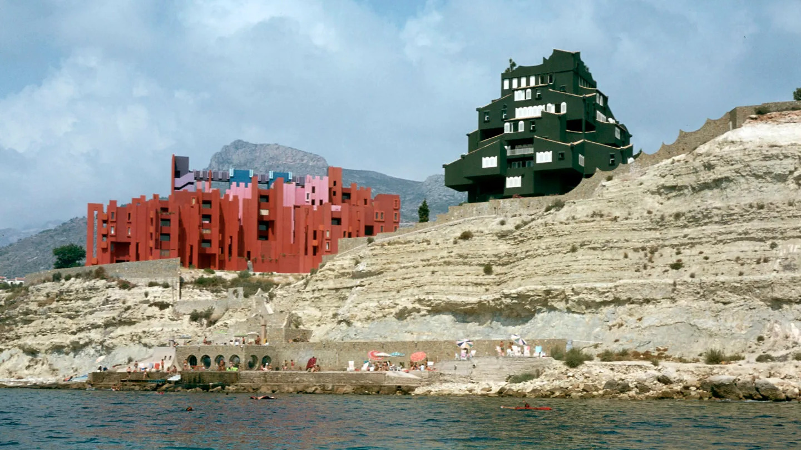
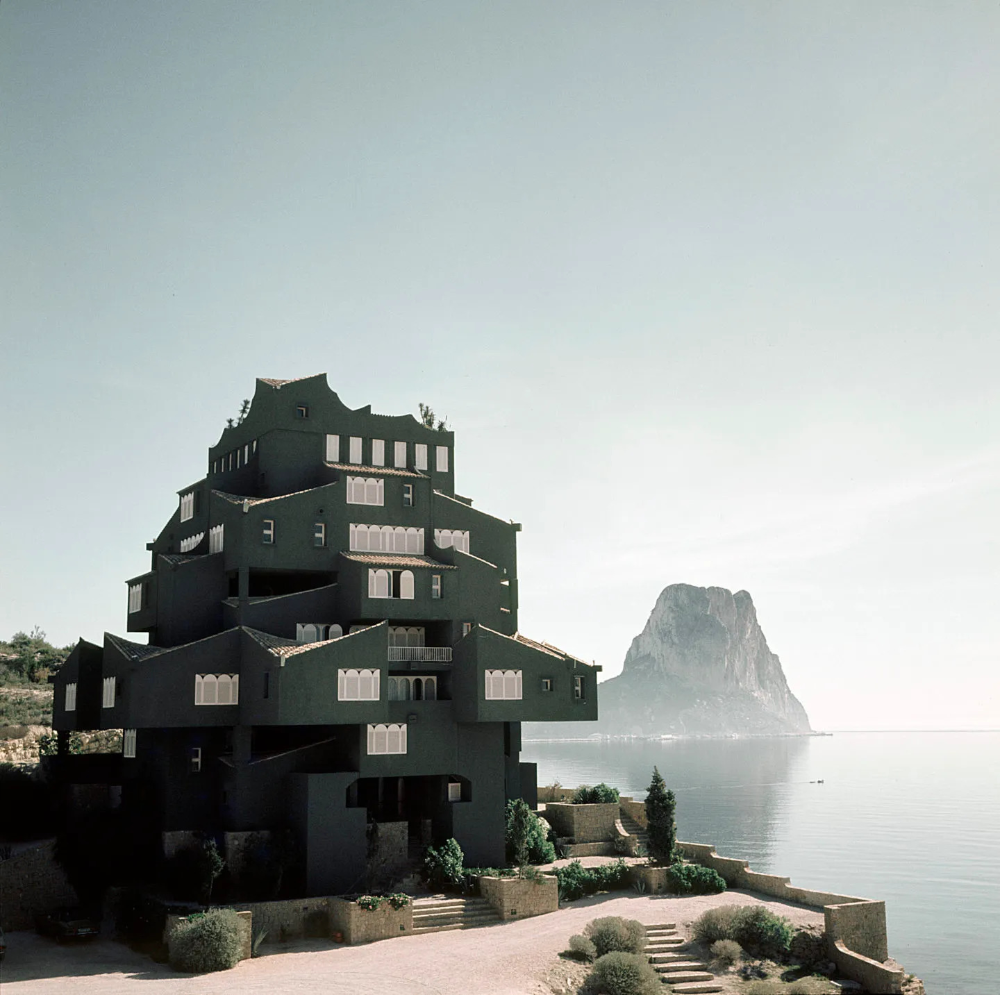
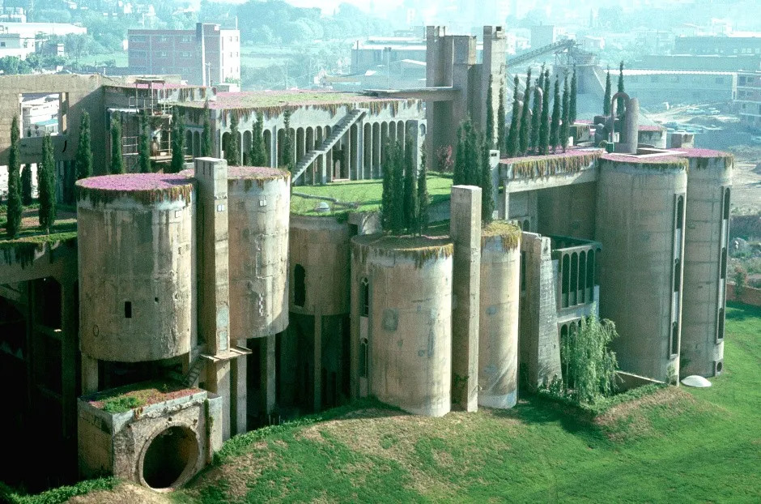
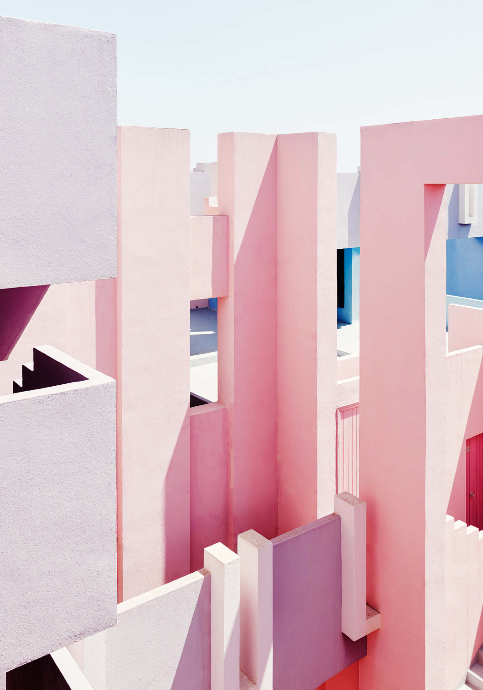
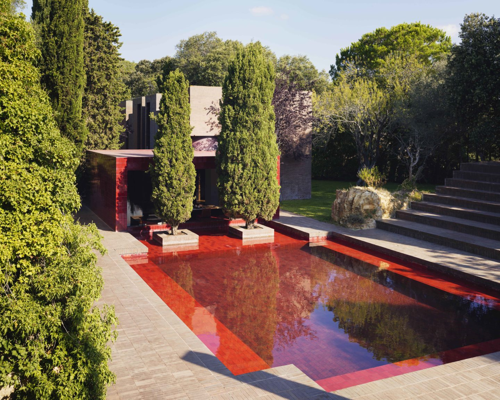
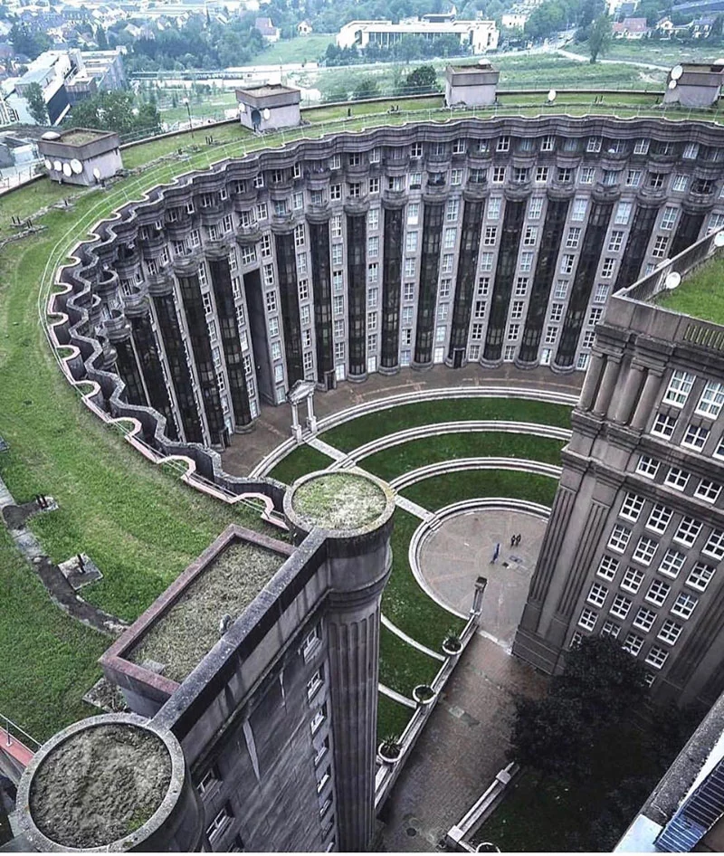

Amoureux de la grande échelle, de la théâtralité et de la démesure,
Ricardo Bofill a su imposer sa vision futuriste de l'architecture
sociale, qui a défini son style si singulier et radical.

L'architecte catalan Ricardo Bofill, né en 1939 à Barcelone, construit
dès le début des années 1960 des édifices remarquables.
Les 5 projets majeurs de Ricardo Bofill à découvrir

Xanadú
Lieu : Alicante, Espagne
Réalisation : 1971
Histoire : Son nom renvoie à celui de la résidence
du personnage mythique dans Citizen Kane d’Orson Welles. Cet
ensemble de 18 résidences d’été, avec son toit en terracotta, ce
vert bouteille et ses fenêtres arquées, est un prototype d’une
ville-jardin, situé en bord de mer de la ville portuaire de la Costa
Blanca. Sur la base d’un château, il a pris une forme inspirée du
rocher d’Ifach qui lui fait face.

La Fábrica
Lieu : Saint Just Devern, Espagne
Réalisation : 1973
Histoire : Tout en béton et de formes cylindriques,
ce paradis sur Terre près de Barcelone est la fois sa résidence
privée et son agence interdisciplinaire, composée d’architectes,
ingénieurs, sociologues, écrivains, cinéastes et philosophes. Il a
su redonner vie à une ancienne cimenterie abandonnée des années 20,
en conservant sa structure pour en faire un complexe à la végétation
luxuriante.

La Muralla Roja
Lieu : Calp, Espagne
Réalisation : 1973
Histoire : Cet ensemble de 50 appartements au ton
rose, violet, bleu ciel et indigo prend ses sources dans
l’architecture de la Méditerranée d’Afrique du Nord. « Le mur rouge
» réinterprète la tradition des kasbahs, plongé dans le paysage de
la Costa Blanca. L’aspect labyrinthique et géométrique renvoie à
l’esthétique constructiviste et forme un ensemble de patios
interconnectés entre les appartements. Sur le toit, des terrasses
avec solarium, piscine et sauna.

Family House
Lieu : Montras, Espagne
Réalisation : 1973
Histoire : Nichée dans la campagne catalane, près
de la Costa Brava, cette résidence d’été a été conçue pour les
proches de Ricardo Bofill. La bâtisse se compose de plusieurs
pavillons recouverts de briques brunes, avec en son centre une
piscine aux carreaux rouges. Une théâtralité renforcée par la
couleur des cyprès, avec un obélisque en briques roses qui sert de
contrepoint aux arbres.

Les espaces d' Abraxas
Lieu : Noisy-le-Grand, France
Réalisation : 1982
Histoire : En béton préfabriqué, cet ensemble de
trois bâtiments en banlieue parisienne s’érige en cité futuriste,
avec ses colonnes et ses frontons au style gréco-romain. Il a servi
de décor de tournage pour Brazil et Hunger Games. Bofill donne ici
sa réponse à une architecture de masse, celle des HLM dénués
d’identité. Le Palacio est un édifice massif de 18 étages, le
Théâtre évoque un agora par sa forme circulaire ; ces deux
structures, qui se rejoignent, forment l’Arc.